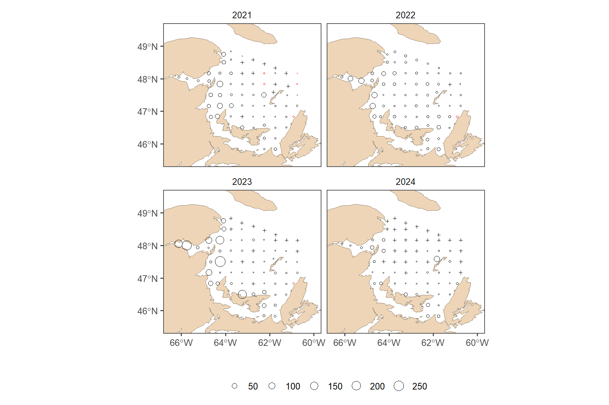
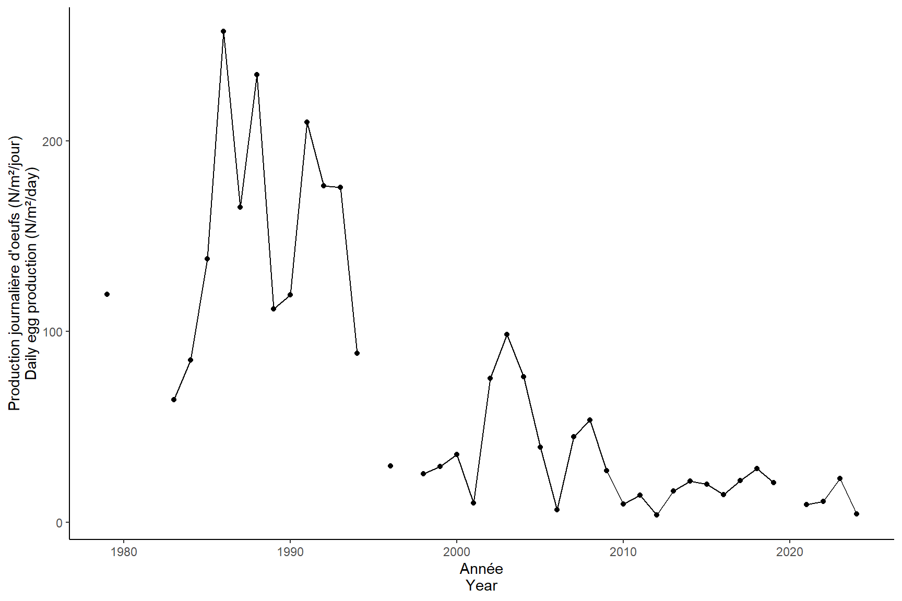

Read
2024-12-12
##### my packages ################################################################################
## CRAN
cran.packages <- c('tidyverse','boot','magrittr','ggpmisc','ggpubr','ggthemes','mgcv',
'fields', 'inlabru', 'sf', 'PresenceAbsence', 'verification', 'raster',
'scales', 'nlme','nls.multstart', 'stringr', 'ggforce',"readxl", "marmap")
install.this <- cran.packages[!(cran.packages %in% utils::installed.packages()[,"Package"])]
if(length(install.this)>=1) install.packages(install.this)
dummy <- lapply(cran.packages, require, character.only = TRUE)
## github
git.packages <- c('catchR','DFOdata','CCAM', 'INLA')
install.this <- git.packages[!(git.packages %in% utils::installed.packages()[,"Package"])]
if('catchR' %in% install.this) devtools::install_github("iml-assess/catchR@eli_parallel")
if('DFOdata' %in% install.this) devtools::install_github("iml-assess/DFOdata")
if('CCAM' %in% install.this) devtools::install_github("elisvb/CCAM")
if('INLA' %in% install.this)install.packages("INLA",repos=c(getOption("repos"),INLA="https://inla.r-inla-download.org/R/stable"), dep=TRUE)
dummy <- lapply(git.packages, require, character.only = TRUE)
##### source R directory ############################################################################
#invisible(sapply(list.files(pattern="[.]R$", path="R/", full.names=TRUE), source))
##### my ggplot theme ################################################################################
theme_set(theme_mackerel()) # theme_mackerel from catchR
update_geom_defaults("line", list(size = 1)) # no idea why somethimes I get fat lines otherwise
##### passwords databases #############################################################################
source("bdOracle.R")
source(paste0("R/",my.year,"/utils/basemap.R")) #if error "plot new has not been call", restart R, package compatibility issues
source(paste0("R/",my.year,"/utils/mackerel_fun_incubation.R")) # Mackerel incubation .
source(paste0("R/",my.year,"/utils/spatial_projections.R"))#
source(paste0("R/",my.year,"/utils/extract_biochem.R"))
source(paste0("R/",my.year,"/utils/extract_T0_10.R"))
source(paste0("R/",my.year,"/INLA/Mesh.R"))
source(paste0("R/",my.year,"/INLA/INLA_ZAG_covar_Stations.R"))
source(paste0("R/",my.year,"/INLA/INLA_ZAG_covar_Stations_CV.R"))
source(paste0("R/",my.year,"/utils/nlme_boot.R"))
source(paste0("R/",my.year,"/INLA/INLA_tw_covar_Stations.R"))
source(paste0("R/",my.year,"/INLA/INLA_tw_covar_Stations_CV.R"))
source(paste0('R/',my.year,'/INLA/plotSpatialFieldCL.R'))
source(paste0('R/',my.year,'/INLA/plotSmoother.R'))
source(paste0('R/',my.year,'/INLA/model_validation.R'))
source(paste0('R/',my.year,'/INLA/get_prediction_grid.R'))
source(paste0('R/biochem/PL_Get_SampleID_Batch.R'))
source(paste0('R/biochem/PL_Get_Counts_Batch.R'))
source(paste0('R/biochem/PL_Read_Filter.R'))
source(paste0('R/biochem/PL_Taxonomic_Grouping.R'))
log10p1_trans = function() scales::trans_new("log10p1", transform=function(x) log10(x+1), inverse=function(x) (10^x)-1)#inverse function is necessary for legend
#source(paste0("R/",year_to_report,"/INLA/getvar.R")) # needs to be retought1 DEP
1.1 INLA Mesh
###INLA mesh###
load(file=paste0("data/",my.year,"/eggt1.RData"))
loc_egg1 <- make_boundary(dat = eggt1, year=my.year, trajet = 1)
## Deleting source `data/2024/INLA/prediction_grid_area2024_trajet1.shp' using driver `ESRI Shapefile'
## Writing layer `prediction_grid_area2024_trajet1' to data source `data/2024/INLA/prediction_grid_area2024_trajet1.shp' using driver `ESRI Shapefile'
## Writing 1 features with 0 fields and geometry type Polygon.
make_mesh(range = 150, Loc = loc_egg1, year=my.year, trajet = 1)
## Reading layer `prediction_grid_area2024_trajet1' from data source `C:\LEHOUX\Maquereau\iml-mackerel\03.0_egg-index\data\2024\INLA\prediction_grid_area2024_trajet1.shp' using driver `ESRI Shapefile'
## Simple feature collection with 1 feature and 1 field
## Geometry type: POLYGON
## Dimension: XY
## Bounding box: xmin: 154156.8 ymin: 207793.2 xmax: 606003.4 ymax: 569285.9
## Projected CRS: NAD83 / Quebec Lambert
# prediction grid for INLA
predstation <- expand_grid(distinct(eggt1 %>% dplyr::select(year)), eggt1 %>% group_by(station) %>% dplyr::summarise(x = mean(longitude, na.rm = T), y = mean(latitude, na.rm = T)) %>% mutate(station = as.factor(station))) %>%
st_as_sf(coords=c("x", "y"), crs=4326, remove=F) %>% st_transform(lcc)
predstation<- bind_cols(predstation, st_coordinates(predstation) %>% as.data.frame() %>% dplyr::rename(X.m=X, Y.m=Y)) %>% st_drop_geometry()
saveRDS(predstation, paste0("data/",my.year,"/INLA/prediction_grid_station", my.year, ".RDS"))
1.2 Spatial field
if(new) INLA_ZAG(dat = eggt1, res_mesh = 150, res_pred = "station", year=my.year, Rvar = "DEP", trajet = 1)
res_mesh = 150
res_pred = "station"
myfamily = "ZAG"
minw = -10
maxw = 10
smoother = F
Rvar = "DEP"
trajet=1
name = paste0(Rvar, "_INLA_mesh", res_mesh,"km_pred_",res_pred,"_",myfamily,my.year,"_trajet",trajet)
#extract predictions#
get_prediction_grid(dir=paste0("results/",my.year,"/INLA/"), dir.out=paste0("results/",my.year,"/INLA/predictions/"),name=name, trans="")
#plot random field#
spfield<- plotSpatialFieldCL(dir=paste0("results/",my.year,"/INLA/"),name=name ,minw=minw, maxw=maxw, my.year=my.year)
annotate_figure(spfield[[1]], "Bernouilli")
annotate_figure(spfield[[2]],"Gamma")
1.3 Coefficients
plotSmoother(dir=paste0("results/",my.year,"/INLA/"),name=name, subfamily="binomial",smoother=smoother)
plotSmoother(dir=paste0("results/",my.year,"/INLA/"),name=name, subfamily="gamma",smoother=smoother)
fixed_effect1 <- read.delim(paste0("results/",my.year,"/INLA/fixed_effects_",name,"binomial", ".txt"))
kable(fixed_effect1, caption="fixed effect Bernoulli model")| mean | sd | X0.025quant | X0.975quant | |
|---|---|---|---|---|
| Intercept | 8.2956706 | 3.920082 | 0.6093556 | 15.9831585 |
| station1.1 | -2.9222463 | 4.034460 | -10.8317847 | 4.9906602 |
| station1.2 | -4.3537161 | 3.976568 | -12.1513845 | 3.4439572 |
| station1.3 | -8.5988512 | 3.952042 | -16.3498830 | -0.8506992 |
| station1.4 | -10.6585946 | 3.972749 | -18.4513738 | -2.8709240 |
| station1.5 | -11.5323525 | 3.999210 | -19.3787214 | -3.6944021 |
| station10.1 | 29.9952642 | 12.103601 | 6.2632415 | 53.7317837 |
| station11.1 | 29.7040841 | 12.084637 | 6.0087227 | 53.4034103 |
| station12.1 | -0.6954064 | 4.206229 | -8.9328625 | 7.5637215 |
| station2.1 | -1.4650659 | 4.091840 | -9.4867394 | 6.5607438 |
| station2.2 | -1.8534292 | 4.077147 | -9.8471696 | 6.1426541 |
| station2.3 | -5.4452677 | 3.951556 | -13.1941364 | 2.3031021 |
| station2.4 | -6.6735783 | 3.944620 | -14.4091450 | 1.0608957 |
| station2.5 | -8.8451759 | 3.948205 | -16.5886099 | -1.1044753 |
| station2.6 | -10.6708241 | 3.968654 | -18.4554787 | -2.8910939 |
| station3.1 | -2.3544638 | 4.055367 | -10.3050932 | 5.5993927 |
| station3.2 | -2.5478409 | 4.033325 | -10.4553145 | 5.3626747 |
| station3.3 | -1.4927625 | 4.109157 | -9.5460869 | 6.5694922 |
| station3.4 | -3.9260616 | 3.977681 | -11.7257859 | 3.8739074 |
| station3.5 | -3.2032116 | 3.994076 | -11.0347093 | 4.6292822 |
| station3.6 | -6.7811706 | 3.942277 | -14.5121266 | 0.9487247 |
| station3.7 | -7.8577637 | 3.944850 | -15.5941349 | -0.1231786 |
| station3.8 | -10.2490786 | 3.960390 | -18.0168377 | -2.4848992 |
| station3.9 | -10.7581113 | 3.974930 | -18.5550596 | -2.9660647 |
| station4.1 | -2.3272639 | 4.051154 | -10.2686465 | 5.6193157 |
| station4.2 | -2.4454760 | 4.040027 | -10.3645447 | 5.4798020 |
| station4.3 | -1.4943499 | 4.118845 | -9.5626990 | 6.5912959 |
| station4.4 | -1.5628298 | 4.079626 | -9.5590078 | 6.4406552 |
| station4.5 | -3.5961940 | 3.978755 | -11.3974367 | 4.2064767 |
| station4.6 | -6.5780293 | 3.943402 | -14.3112847 | 1.1539838 |
| station4.7 | -7.2870584 | 3.943827 | -15.0212796 | 0.4456590 |
| station4.8 | -8.7451007 | 3.947262 | -16.4864017 | -1.0059829 |
| station4.9 | -10.8754068 | 3.973364 | -18.6693125 | -3.0864564 |
| station5.1 | 30.6491258 | 12.373268 | 6.3878600 | 54.9135384 |
| station5.2 | -4.8624543 | 3.961059 | -12.6301658 | 2.9043530 |
| station5.3 | -4.5290569 | 3.962633 | -12.2991899 | 3.2414898 |
| station5.4 | -4.9981215 | 3.953762 | -12.7508510 | 2.7550350 |
| station5.5 | -6.2196025 | 3.944305 | -13.9543534 | 1.5144489 |
| station5.6 | -7.1453669 | 3.943746 | -14.8793949 | 0.5872262 |
| station5.7 | -9.1357858 | 3.953486 | -16.8896603 | -1.3848145 |
| station6.1 | -1.3638155 | 4.094139 | -9.3860210 | 6.6707475 |
| station6.2 | -2.8237435 | 4.013619 | -10.6921004 | 5.0486000 |
| station6.3 | -3.5478262 | 3.994304 | -11.3796821 | 4.2852383 |
| station6.4 | -5.0700971 | 3.956028 | -12.8273970 | 2.6873811 |
| station6.5 | -5.0548029 | 3.953462 | -12.8071477 | 2.6975625 |
| station6.6 | -4.7742802 | 3.954847 | -12.5293882 | 2.9807502 |
| station6.7 | -6.9908241 | 3.946951 | -14.7310247 | 0.7481614 |
| station6.8 | -8.7936022 | 3.997620 | -16.6345499 | -0.9565838 |
| station7.1 | 30.2020599 | 12.133013 | 6.4107483 | 53.9941105 |
| station7.2 | 28.9080191 | 11.738363 | 5.8918991 | 51.9280947 |
| station7.3 | -2.3886536 | 4.045725 | -10.3190100 | 5.5476898 |
| station7.4 | -3.2445583 | 3.998318 | -11.0837408 | 4.5969269 |
| station7.5 | -4.3700936 | 3.964850 | -12.1445792 | 3.4047961 |
| station7.6 | -6.0235437 | 3.950836 | -13.7711566 | 1.7232590 |
| station7.7 | -7.3884893 | 3.956819 | -15.1484030 | 0.3695048 |
| station8.1 | -2.8994440 | 4.026513 | -10.7935565 | 4.9977220 |
| station8.2 | 29.7532325 | 12.000458 | 6.2223600 | 53.2859680 |
| station8.3 | -0.9782507 | 4.141723 | -9.0902322 | 7.1535678 |
| station8.4 | 28.5721023 | 11.659512 | 5.7113642 | 51.4381891 |
| station8.5 | 29.0966717 | 11.755625 | 6.0459416 | 52.1493306 |
| station8.6 | -5.1660441 | 3.959317 | -12.9300728 | 2.5976035 |
| station8.7 | -5.9664195 | 3.960027 | -13.7320968 | 1.7983760 |
| station9.1 | -2.5773185 | 4.045432 | -10.5066363 | 5.3589863 |
| station9.2 | 30.0244192 | 12.098744 | 6.3003848 | 53.7496851 |
| station9.3 | 29.7788966 | 11.993185 | 6.2653922 | 53.3007807 |
| station9.4 | -2.7540925 | 4.021879 | -10.6395165 | 5.1335558 |
| station9.5 | -1.5247555 | 4.095026 | -9.5529189 | 6.5070545 |
fixed_effect2 <- read.delim(paste0("results/",my.year,"/INLA/fixed_effects_",name,"gamma", ".txt"))
kable(fixed_effect2, caption="fixed effect Gamma model")| mean | sd | X0.025quant | X0.975quant | |
|---|---|---|---|---|
| Intercept | 2.0792846 | 3.866305 | -5.502158 | 9.660725 |
| station1.1 | -0.3355164 | 3.877648 | -7.939198 | 7.268170 |
| station1.2 | -0.4457024 | 3.875798 | -8.045751 | 7.154360 |
| station1.3 | -2.1347711 | 3.884756 | -9.752386 | 5.482856 |
| station1.4 | -3.4220449 | 3.907842 | -11.084934 | 4.240849 |
| station1.5 | -4.8827425 | 3.924169 | -12.577658 | 2.812156 |
| station10.1 | 1.4158353 | 3.874788 | -6.182235 | 9.013913 |
| station11.1 | 2.4388049 | 3.877014 | -5.163629 | 10.041249 |
| station12.1 | 0.5792715 | 3.880866 | -7.030728 | 8.189258 |
| station2.1 | -0.2102191 | 3.875056 | -7.808815 | 7.388386 |
| station2.2 | -0.7122409 | 3.873931 | -8.308631 | 6.884158 |
| station2.3 | -0.9798076 | 3.874529 | -8.577372 | 6.617763 |
| station2.4 | -2.1517660 | 3.876197 | -9.752603 | 5.449071 |
| station2.5 | -2.6054794 | 3.883478 | -10.220599 | 5.009633 |
| station2.6 | -3.1223235 | 3.899647 | -10.769134 | 4.524509 |
| station3.1 | 0.8669195 | 3.877789 | -6.737032 | 8.470886 |
| station3.2 | 0.0596316 | 3.875580 | -7.539993 | 7.659263 |
| station3.3 | 0.1753426 | 3.873828 | -7.420846 | 7.771538 |
| station3.4 | -0.6074998 | 3.872690 | -8.201458 | 6.986465 |
| station3.5 | -0.7900621 | 3.872206 | -8.383072 | 6.802950 |
| station3.6 | -1.2457892 | 3.876053 | -8.846348 | 6.354765 |
| station3.7 | -1.3040033 | 3.881085 | -8.914429 | 6.306418 |
| station3.8 | -2.5355331 | 3.893670 | -10.170639 | 5.099563 |
| station3.9 | -3.9944722 | 3.903934 | -11.649710 | 3.660747 |
| station4.1 | -0.0363011 | 3.877367 | -7.639430 | 7.566834 |
| station4.2 | 0.8913238 | 3.875470 | -6.708086 | 8.490740 |
| station4.3 | 1.3021372 | 3.873443 | -6.293298 | 8.897578 |
| station4.4 | -0.3241844 | 3.872045 | -7.916877 | 7.268514 |
| station4.5 | -0.3192354 | 3.872263 | -7.912361 | 7.273887 |
| station4.6 | 0.7451481 | 3.874941 | -6.853231 | 8.343518 |
| station4.7 | -0.0806887 | 3.876189 | -7.681514 | 7.520129 |
| station4.8 | -1.3911725 | 3.881637 | -9.002684 | 6.220328 |
| station4.9 | -3.6432707 | 3.899064 | -11.288952 | 4.002405 |
| station5.1 | 0.7861755 | 3.873263 | -6.808909 | 8.381262 |
| station5.2 | 0.8075045 | 3.872789 | -6.786649 | 8.401661 |
| station5.3 | 0.6699524 | 3.872617 | -6.923868 | 8.263768 |
| station5.4 | 0.8945054 | 3.872528 | -6.699139 | 8.488147 |
| station5.5 | 1.2448693 | 3.873854 | -6.351374 | 8.841111 |
| station5.6 | -0.4126930 | 3.876565 | -8.014258 | 7.188861 |
| station5.7 | -2.2956439 | 3.882749 | -9.909336 | 5.318037 |
| station6.1 | 1.3035035 | 3.874558 | -6.294120 | 8.901129 |
| station6.2 | 1.0230841 | 3.872430 | -6.570365 | 8.616537 |
| station6.3 | 1.1371121 | 3.872476 | -6.456428 | 8.730653 |
| station6.4 | 1.2780889 | 3.872816 | -6.316121 | 8.872295 |
| station6.5 | 1.2727847 | 3.872974 | -6.321734 | 8.867301 |
| station6.6 | 0.5793381 | 3.873510 | -7.016234 | 8.174903 |
| station6.7 | -0.9732939 | 3.878615 | -8.578878 | 6.632280 |
| station6.8 | -2.1790730 | 3.912769 | -9.851630 | 5.493474 |
| station7.1 | 1.9240100 | 3.873079 | -5.670711 | 9.518737 |
| station7.2 | 1.9088142 | 3.872383 | -5.684544 | 9.502175 |
| station7.3 | 1.8485551 | 3.871967 | -5.743987 | 9.441099 |
| station7.4 | 1.8676102 | 3.872914 | -5.726791 | 9.462011 |
| station7.5 | 1.4137880 | 3.873350 | -6.181467 | 9.009044 |
| station7.6 | 0.0819039 | 3.876009 | -7.518568 | 7.682370 |
| station7.7 | -1.9837831 | 3.881660 | -9.595340 | 5.627761 |
| station8.1 | 0.1892879 | 3.875526 | -7.410234 | 7.788812 |
| station8.2 | 1.8525639 | 3.873059 | -5.742117 | 9.447253 |
| station8.3 | 2.4408060 | 3.872780 | -5.153329 | 10.034945 |
| station8.4 | 2.5637332 | 3.872693 | -5.030229 | 10.157703 |
| station8.5 | 2.1420004 | 3.872895 | -5.452361 | 9.736367 |
| station8.6 | 0.7795778 | 3.875557 | -6.820006 | 8.379161 |
| station8.7 | -0.2503869 | 3.878919 | -7.856566 | 7.355784 |
| station9.1 | 1.1460975 | 3.875999 | -6.454352 | 8.746549 |
| station9.2 | 1.4704514 | 3.874261 | -6.126587 | 9.067494 |
| station9.3 | 2.6779162 | 3.873413 | -4.917457 | 10.273299 |
| station9.4 | 1.4634721 | 3.873986 | -6.133028 | 9.059977 |
| station9.5 | 2.2070639 | 3.874441 | -5.390329 | 9.804461 |
1.4 Range
rbern<- myrange(dir=paste0("results/",my.year,"/INLA/"),name=name, subfamily="binomial")
kable(rbern, caption="Range for the Bernoulli model")| x |
|---|
| Kappa=1.2e-05 |
| sigmau=2.506 |
| range (km)=239.992 |
| erreur around range (km)=181.765-301.612 |
rgamma<- myrange(dir=paste0("results/",my.year,"/INLA/"),name=name, subfamily="gamma")
kable(rgamma, caption="Range for the Gamma model")| x |
|---|
| Kappa=1.45e-05 |
| sigmau=1.587 |
| range (km)=195.359 |
| erreur around range (km)=171.419-220.465 |
1.5 Validation
validation_ZAG(dir=paste0("results/",my.year,"/INLA/"),name=name,
rvarpos=2, varpos=5)
1.6 INLA cross-validation
load(file=paste0("data/",my.year,"/INLA/INLA_CV_eggdata.RData"))
#do not need to do every year.
if(new) INLA_ZAG_CV(dat = eggcv_all , res_mesh = 150, res_pred = "station", trajet = 1, year=my.year, Rvar="DEP")
# to get result use summary fitted values
load(paste0("results/",my.year,"/INLA/DEP_INLA_mesh150km_pred_station_ZAG_",my.year,"_CV_trajet1.RData"))
# Extract mean from fitted values
idb.prd <- inla.stack.index(stkallBern, "BernFit")$data
Pi <- Gbern$summary.fitted.values$mean[idb.prd] # il n'y a pas d'index pour prediction, j'ai setté à NA.
# sd.prd <- I$summary.fitted.values$sd[id.prd]
mu <- Ggamma$summary.fitted.values$mean[idb.prd]
eggcv_all$Fit <- Pi * mu
my.formula <- y ~ x # for smooth in ggplot
inlastation1 <- eggcv_all %>%
ungroup() %>%
filter(!sample_id %in% eggcv_to_fit$sample_id) %>%
dplyr::rename(inlastation = Fit) %>%
dplyr::select(sample_id, inlastation)
pcv <- full_join(eggt1 %>% dplyr::select(sample_id, year, DEP) %>% filter(sample_id %in% inlastation1$sample_id), inlastation1) %>%
ggplot(aes(x = DEP, y = inlastation)) +
geom_point() +
geom_smooth(method = "lm") +
basetheme+
stat_poly_eq(
formula = my.formula,
aes(label = paste(after_stat(eq.label), after_stat(rr.label), sep = "~~~")),
parse = TRUE, vstep = 0.08
) +geom_abline(slope=1, intercept=0, col="red", lty=2)
##attention il faut sauvegarder eggcv pour que cette figure soit reproductible.
mybreaks=c(0,10,30,100,300,1000,2000)
pcv + scale_x_continuous(name = "PJO calculées (N/m²/day) | Calculated DEP (N/m²/day)", trans = "log10p1", breaks=mybreaks) + scale_y_continuous(name = "PJO prédite (N/m²/day)\nPredicted DEP (N/m²/day)", trans = "log10p1", breaks=mybreaks)
1.7 DEP MAPs
predt1 <- read.delim(paste0("results/",my.year,"/INLA/predictions/predictions_DEP_INLA_mesh150km_pred_station_ZAG", my.year, "_trajet1.txt"))
lookup <- read.delim("data/lookup_station_egg.txt")
DEPt1a <- full_join(eggt1 %>% mutate(station=as.numeric(station),
stratum=as.numeric(stratum)), left_join(predt1, lookup %>% dplyr::select(-c(depth, latitude, longitude)))) %>% mutate(DEP = coalesce(DEPbackup, Fit))
DEP <- full_join(lookup %>% dplyr::rename(lat=latitude, lon=longitude) %>% dplyr::select(station, lat, lon),
DEPt1a %>% mutate(estimated = ifelse(is.na(DEPbackup) & !is.na(DEP), "estimated", "observed"))) %>%
mutate(latitude=coalesce(latitude, lat),
longitude=coalesce(longitude,lon))
year_to_plot= (my.year-4) : my.year
basemap2 +
geom_point(data = DEP %>% filter(year %in% year_to_plot,DEP > 0), aes(x = longitude, y = latitude, size = DEP, col = estimated), shape = 21, stroke=0.5) +
geom_point(data = DEP %>% filter(year %in% year_to_plot,DEP == 0), aes(x = longitude, y = latitude), shape = 3, size=0.8, stroke=0.5) +
facet_wrap(~year) +
scale_color_manual(values = c("red", "black"), guide = "none") +
theme_few()+ theme(legend.position="bottom", plot.background = element_blank())+
scale_x_continuous(breaks=seq(-66,-60,2))+
scale_size_continuous(name="",breaks=c(seq(0, ceiling(max(DEP$DEP)), 50)),range=c(0.25,5)) 
ggsave(paste0("img/",my.year,"/DEP.png"), width=4, height=4.8, dpi=600, units="in")
save(DEP, file=paste0("data/",my.year,"/DEP.RData"))
all_years= data.frame(year=seq(1979, my.year, 1))
left_join(all_years,DEP) %>%
group_by(year) %>%
dplyr::summarize(
DEP.p = mean(DEP, na.rm = T)) %>%
ggplot(aes(x=year, y=DEP.p)) +geom_point()+geom_line() +
ylab("Production journalière d'oeufs (N/m²/jour)\nDaily egg production (N/m²/day)")+
xlab("Ann\u00E9e\nYear")
ggsave(paste0("img/",my.year,"/DEP_trajet1_year.png"),width = 6, height = 4, unit = "in", dpi = 600)